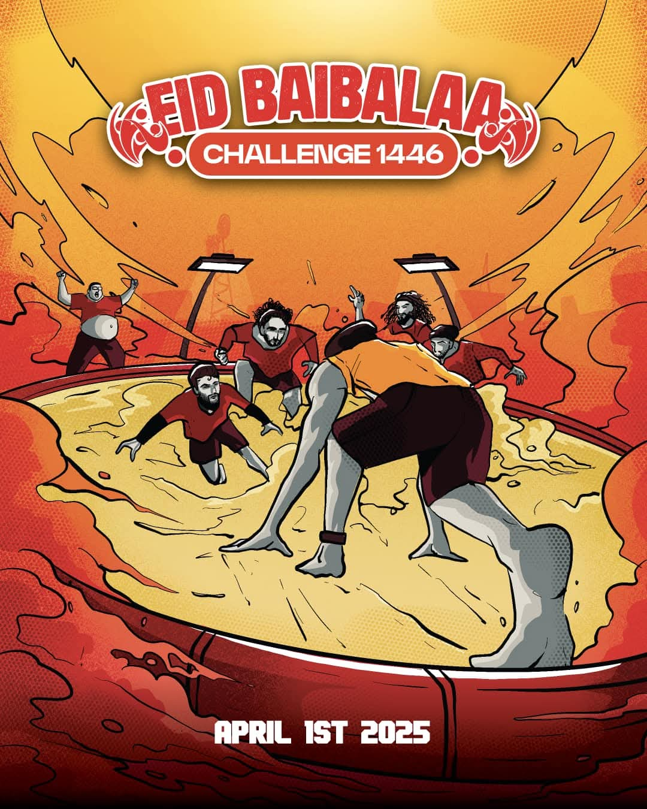

This Year's Baibalaa Tournament to be Held During Eid Holidays
Published on: 17th March 2025, 13:45
The much-awaited Baibalaa Tournament is returning this year, and it’s going to be bigger than ever! Scheduled to take place during the Eid holidays, this tournament promises to deliver an exciting blend of competitive gameplay, team spirit, and festive celebrations.
Teams from across the country are already preparing for the event, with players practicing their skills in anticipation of the intense competition. Fans can expect thrilling matches and the opportunity to witness rising stars in the Baibalaa community. The tournament will feature various teams competing for the top spot, and the winners will take home exclusive prizes!
In addition to the exciting matches, there will be several community events happening alongside the tournament, allowing spectators to engage with the players, enjoy local food stalls, and experience the festive spirit that the Eid holidays bring.
Stay tuned for more updates as the event date approaches!